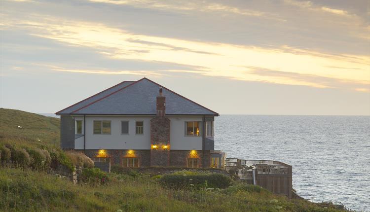

Lewinnick Lodge - Restaurant

Lewinnick Lodge
Perched on the craggy cliffs of the Pentire peninsula, drink in the views whilst you dine in our restaurant and feast upon the striking sea through floor to ceiling glass. Whether dining in the restaurant, bar, beer garden or sun terrace, the ocean views from our restaurant are unrivalled, gaze from Fistral beach to the heady horizon beyond the Atlantic whilst breathing in the clear sea air.
We specialise in seafood, much of it from the waters surrounding Cornwall, and have effortlessly married our British menu with an eclectic selection of crisp wines, premium lagers, local ales and ciders. From fresh locally sourced products our exciting menu has something for everyone.
.The lodge is open for breakfast at 9am and serves throughout the day until 10pm (10.30pm in the summer).
Road Directions
From A30 take A39 exit toward Newquay/A392, At Highgate Hill Roundabout, take the 3rd exit onto A39. At the next roundabout take the 2nd exit onto A392 (go through 2 roundabouts). At the roundabout, take the 2nd exit onto A392/Trevemper road (go through 1 roundabout).
At the next roundabout, take the 1st exit onto Pentire road. Continue to the end of the road (1 mile), turn right then left, follow the lane down to ‘The Lodge’.
Map